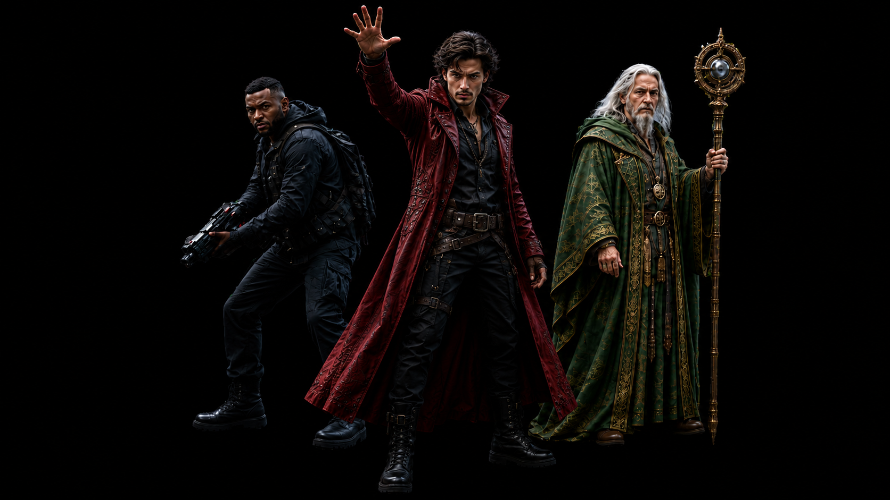
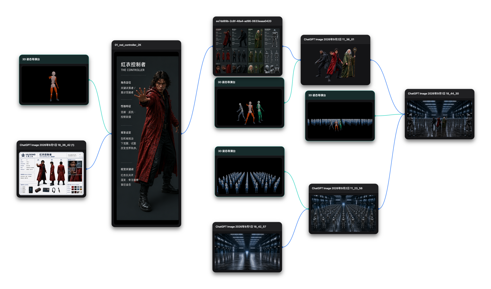

SYSTEM PARADIGM //
多模态 AI 创作控制系统
DIRECT THE GENERATION.
让复杂创作，从反复生成走向主动控制
TwitCanva 将角色、动作、空间关系、场景和镜头等创作要求组织为可调整、可复用的控制输入。创作者可以分别准备和修改，再通过画布组合，用于图像与视频生成。
告别无序抽卡 · 建立角色/动作/站位/镜头的显式控制体系
⌜
⌝
⌞
⌟
ARCHITECTURE SPEC
01 / IDENTITY
角色身份参考
WHO
02 / MOTION
3D 动作姿态
HOW
03 / STAGING
空间站位关系
WHERE
04 / CONTEXT
群像规模与场景
WORLD
MASTER SCENE // CONTROLLED CONFRONTATION
ASPECT 16:9 · 4K COMPOSITION

⌜01 角色身份⌟
3 位核心主角 (战士 · 控制者 · 智者)
⌜02 独立动作⌟
持枪警惕 · 控场前探 · 拄杖蓄势
⌜03 空间站位⌟
三角防御阵型 · 纵深拉开
⌜04 军团规模⌟
50+ 机械卫兵阵列
⌜05 工业环境⌟
18 号机库 · 顶光反射地面
HOW THIS SCENE WAS BUILT
这个场景，怎样在 TwitCanva 中完成？
CHARACTER
·
POSE
·
RELATION
·
CROWD
·
WORLD
角色与动作参考
→
人物关系与站位
→
机器人群像与场景
→
连线协同汇聚生成

ONE CHANGE. FULL REROLL.
当结果已经基本正确，为什么修改一个变量，仍然会重新打开整张画面的不确定性？
SOURCE STANDARD / 基准对照组
CURRENT VALID STATE
TEST 01 / CHARACTER DRIFT
POSE ✓ · CHARACTER ✗

TEST 02 / RELATION DRIFT
POSE ✓ · RELATION ✗
TEST 03 / COMPOSITION DRIFT
POSE ✓ · COMPOSITION ✗
DECOMPOSE BEFORE GENERATE.
复杂场景不是一个 Prompt。先把原本耦合在生成里的角色、动作、人物关系、群像与环境拆成可管理的控制资产，再进入生成。
BEFORE
变量隐含在一次生成里
ONE PROMPT · ONE SAMPLING SPACE
Character · Pose · Relation
Crowd · Environment
Crowd · Environment
AFTER
变量进入显式控制
EXPLICIT CONTROL PLAN
SUBJECT · SPATIAL · WORLD
01 / SUBJECT
Character · Pose
WHO / HOW
谁在场，以及角色如何行动。
02 / SPATIAL
Relation · Scene Staging
WITH WHOM / WHERE
人物彼此怎么站，以及主体如何组织在空间里。
03 / WORLD
Crowd · Environment
SCALE / CONTEXT
群像如何组织，以及场景发生在什么环境中。
REAL PRODUCT EVIDENCE / CONTROL PLAN

SUBJECT
+
SPATIAL
+
WORLD
FINAL SCENE
复杂度没有消失。 控制权发生了转移。
COMPLEXITY DIDN'T DISAPPEAR. CONTROL MOVED.
角色、动作、人物关系、群像与环境，本来就存在于生成过程里。TwitCanva 把这些原本由模型隐式决定的变量，转成用户可以观察、编辑和组合的控制资产。
隐式生成变量
显式控制资产
IMPLICIT GENERATION VARIABLES → EXPLICIT CONTROL ASSETS
TwitCanva 不是把 Prompt 写得更复杂，而是把需要被控制的创作变量组织成一套可组合的 Control Plan。
IMPLICIT
GENERATION VARIABLES
EXPLICIT
CONTROL ASSETS
ARCHITECTURE
CONTROL PLAN